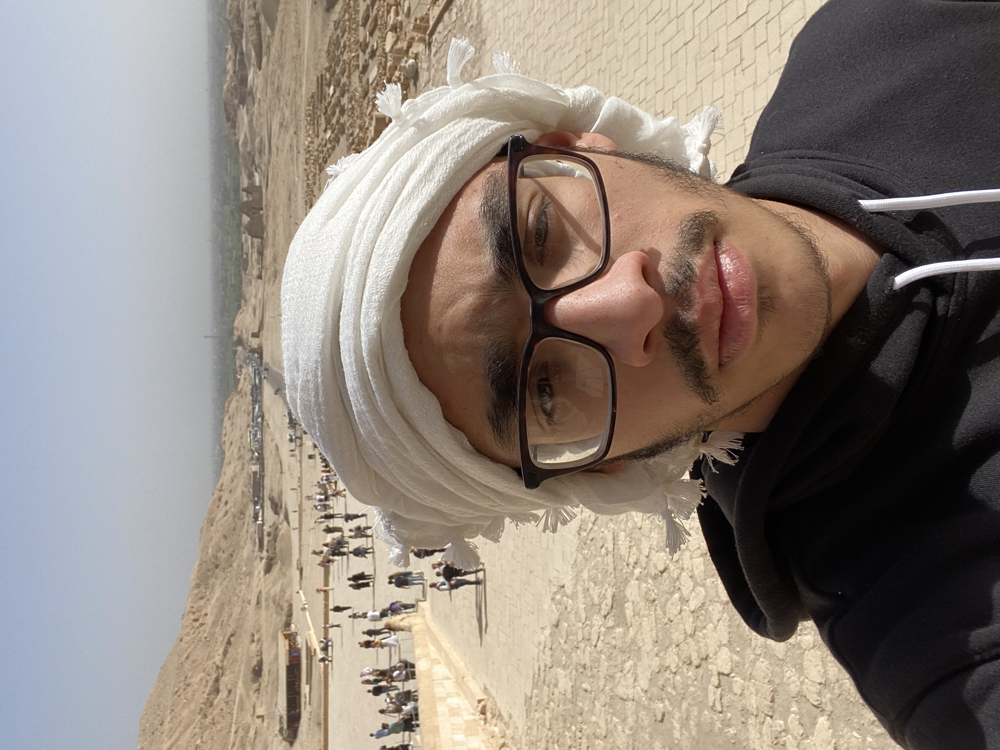
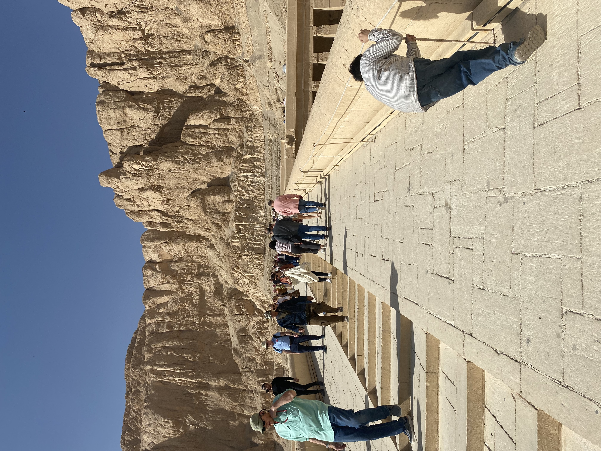
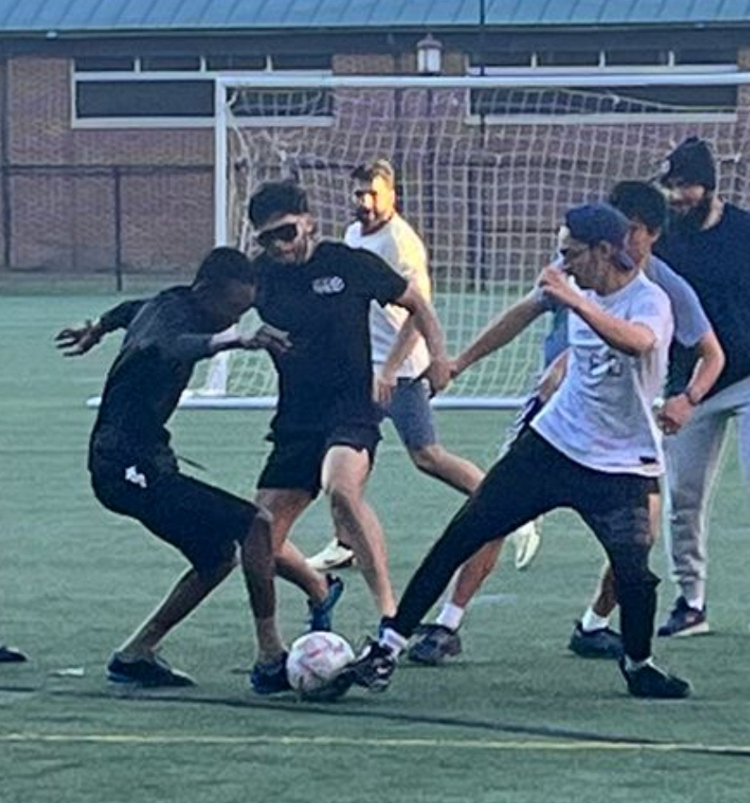
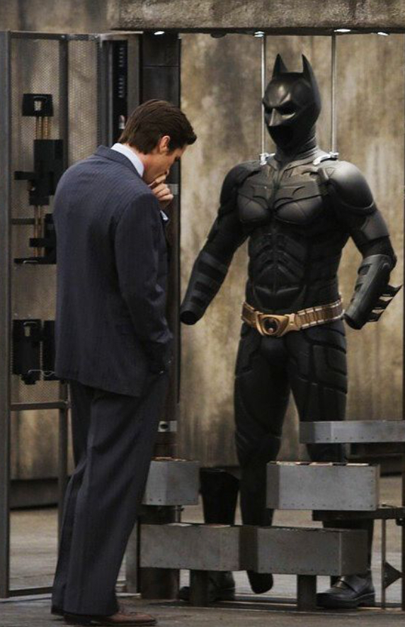

I love building things with code and learning new technologies. I’m passionate about computer engineering, AI, web development, and game programming. Additionally, I love doing things outside of academics such as playing football, solving word puzzles, and watching my favorite shows and movies.
I was born and raised in Cairo, Egypt — a city full of history, energy, and inspiration. My early curiosity for technology started there, surrounded by a culture that values both tradition and innovation.


I’m a huge football (soccer) fan and love playing the game whenever I can. Whether it’s a competitive match or a pickup game with friends, I enjoy the challenge and teamwork involved. It helps me stay sharp both mentally and physically.

When I’m not coding or on the field, I love relaxing with a good show or movie. Some of my all-time favorites include:
